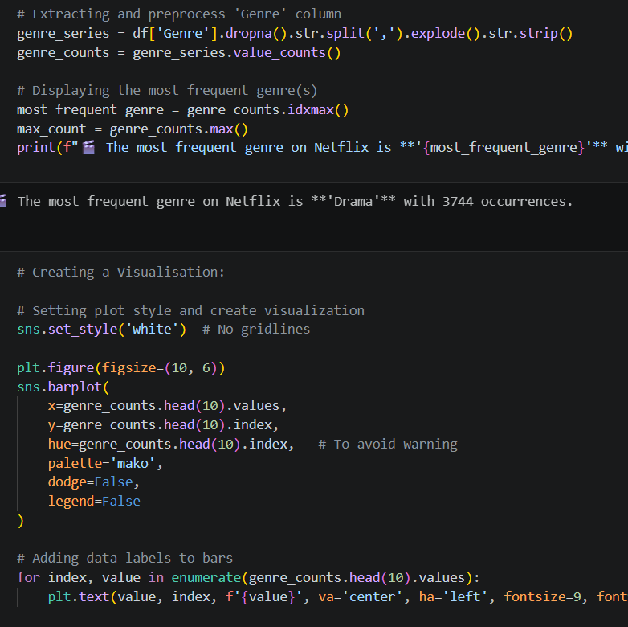
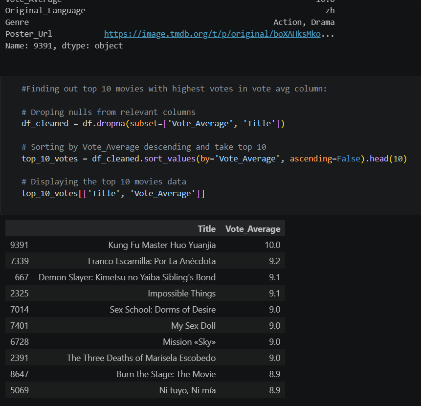
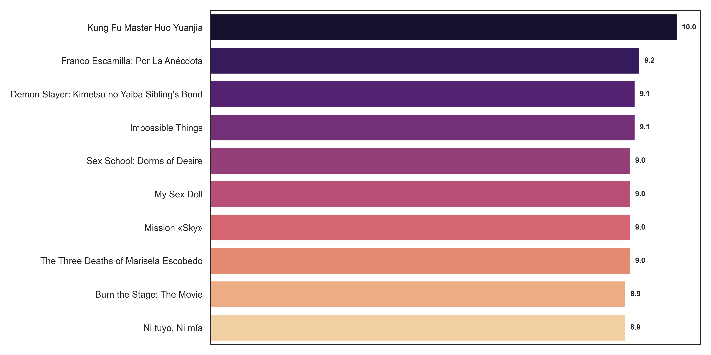
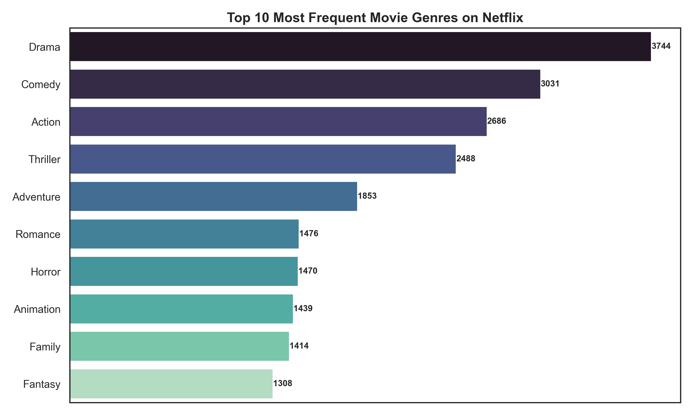
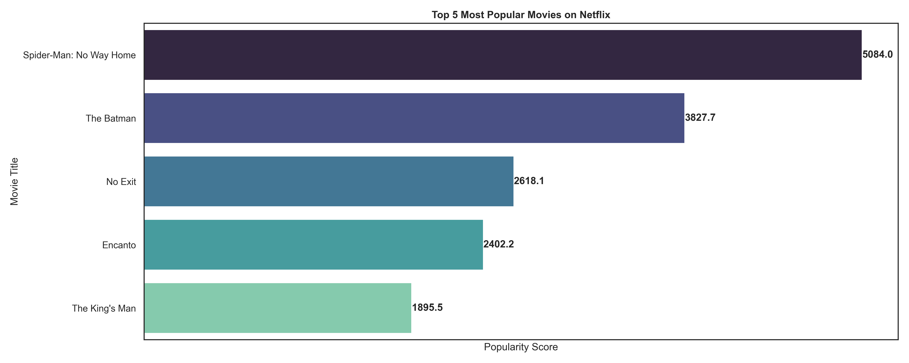
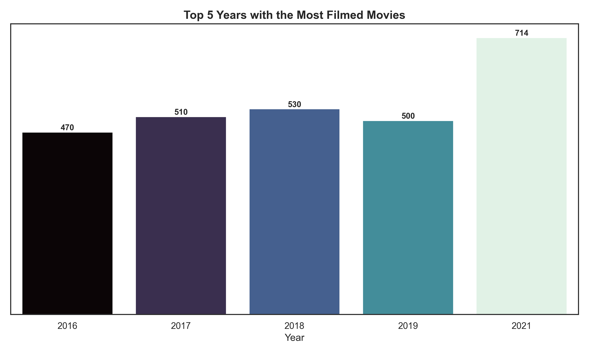

Data Analytics Project · Python
Netflix Movie Analysis
There are thousands of movies on Netflix. But which ones are people actually watching,
rating, and talking about?
I analysed 9,827 Netflix movies using Python, answering five real business questions
about genre trends, popularity, ratings, and release patterns. The kind of questions a
streaming platform, production house, or content team needs answered before making their
next big decision.
Python Analysis
See the analysis
This is a complete exploratory data analysis built in Python using Pandas for data
cleaning and analysis, and Matplotlib and Seaborn for visualisations. Every question
is answered with clean code and a clear chart.


Python Code - Data Cleaning & Analysis




Analysis Charts - Genre, Ratings, Popularity & Yearly Trends
About This Project
What problem does this solve?
Imagine you work at a content production company. You have a budget to create new movies.
You need to decide which genre should you invest in? What year had the most competition?
And what does a movie need to get a high rating?
Making those decisions based on gut feeling is expensive. Making them based on 9,827
movies worth of real data is strategy.
I took a complete Netflix movie dataset covering release dates, genres, popularity
scores, vote counts, vote averages, and languages cleaned it, analysed it, and
answered five specific questions that matter to anyone in the content or media business.
How I Did It
Here is my process
- Loaded and explored the dataset - Read 9,827 movies into a Pandas DataFrame and inspected the structure, data types, and null values
- Cleaned the data - Handled missing values, converted date columns to datetime format, and extracted year from release dates
- Analysed genre distribution - Exploded multi-genre entries and counted individual genre occurrences across all movies
- Ranked by popularity and rating - Sorted movies by popularity score and vote average to find the top and bottom performers
- Identified yearly trends - Counted movies released per year to find peak production periods
- Built visualisations - Created bar charts using Seaborn and Matplotlib for every question with clean, labelled charts
What I Found
What the data revealed
- Drama is the most dominant genre on Netflix - With 3,744 occurrences, Drama appears far more than any other genre. For content creators, the audience demand is clearly there, but the space is also the most crowded
- Spider-Man: No Way Home is the most popular movie - With a popularity score of 5,083 nearly 1,300 points ahead of The Batman in second place, it is the most talked-about title in the entire dataset
- 2021 was the biggest year for Netflix movie releases - 714 movies were released in 2021 alone, followed by 2018 (530), 2017 (510), 2019 (500), and 2016 (470). The streaming boom is clearly visible in the data
- The lowest popularity movies are virtually invisible - The United States vs. Billie Holiday and Threads both scored just 13.354 in popularity. A reminder that most content reaches almost no one without the right push
- High vote average does not always mean high popularity - The top-rated movies by score are not always the most popular ones. Quality and visibility are two very different things on a streaming platform
Tools & Skills
Built with
- Python - Core programming language for the entire analysis
- Pandas - Data loading, cleaning, filtering, sorting, and grouping
- Matplotlib & Seaborn - Chart creation and visualisation design
- Exploratory Data Analysis (EDA) - Structured question-led approach to uncovering patterns in 9,827 movie records
- Data Cleaning - Handling null values, datetime conversion, and multi-value column processing